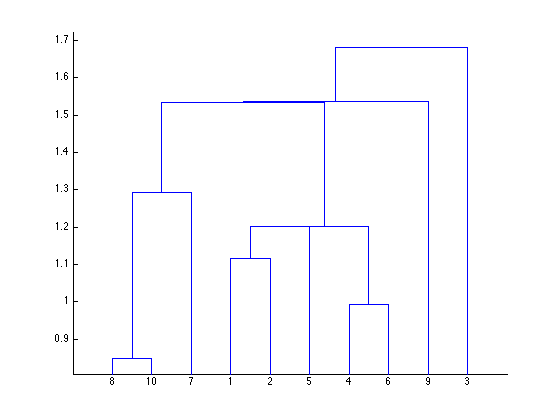

ClusterTests
ClusterTests
This MATLAB script is used to generate data for testing the various vMAT functions used for clustering observations.
Contents
Input Test Data
First off, we need some data to play with. Since we don’t have anything more interesting at hand for the moment, let’s start with a repeatable random sample from a normal distribution.
X = gallery('normaldata', [10 3], 13, 'double'); cmap = gray; cmap(:, 1:3) = .95; makeHtmlTable(X, [], seqlabels('obs', 10), seqlabels('x', 3), cmap, 4);
| x1 | x2 | x3 | |
| obs1 | 1.203 | 0.06809 | -0.5938 |
| obs2 | 0.6676 | -0.3744 | 0.2813 |
| obs3 | 1.737 | 1.532 | -1.225 |
| obs4 | -0.474 | -0.1009 | 0.02343 |
| obs5 | 1.677 | -0.7548 | 0.8096 |
| obs6 | -1.28 | -0.6805 | -0.009285 |
| obs7 | -0.9427 | 1.165 | -0.7701 |
| obs8 | 0.2707 | 1.155 | 0.4899 |
| obs9 | -1.429 | 0.7309 | -2.161 |
| obs10 | -0.5094 | 1.479 | 0.406 |
pdist and linkage
Now we can compute the pairwise-distances between observations (pdist) and then the hierarchical cluster tree (linkage). The dendrogram plot provides a nice visual summary of the hierarchical cluster tree. (It’s only here for informational purposes, as vMAT doesn’t have any plotting functions.)
NOTE: Don’t forget, vMAT_pdist wants X’, and vMAT_linkage has zero-based indexes in the first two columns. The data in the MAT file includes the variable Zv for validating the test results.
Y = pdist(X); Z = linkage(Y); Zv = [Z(:,1:2)-1 Z(:,3)]; makeHtmlTable(Zv,[], ... seqlabels('link', length(Zv)), {'idx1', 'idx2', 'distance'}, cmap, 4); dendrogram(Z);
| idx1 | idx2 | distance | |
| link1 | 7 | 9 | 0.8487 |
| link2 | 3 | 5 | 0.9934 |
| link3 | 0 | 1 | 1.117 |
| link4 | 4 | 12 | 1.201 |
| link5 | 11 | 13 | 1.202 |
| link6 | 6 | 10 | 1.292 |
| link7 | 14 | 15 | 1.533 |
| link8 | 8 | 16 | 1.536 |
| link9 | 2 | 17 | 1.681 |

inconsistent
Two methods of clustering are supported in vMAT (for now): ‘cutoff:’ uses an inconsistency coefficient to produce an arbitrary number of clusters, and ‘maxclust:’ returns at most a specified number of clusters. [The MATLAB cluster function of course has a number of additional options, but these are two commonly useful ones.]
When you’re actually using vMAT_cluster it’s not necessary to call the vMAT_inconsistent function explicitly; it’s called from vMAT_cluster as necessary. But for the purpose of testing, we’re going to call it so we can validate that vMAT’s function matches the output of MATLAB’s. (If the two implementations are inconsistent [sic], the clustering is likely to come out differently as well.) The inconsistency coefficient is explained in the documentation for the inconsistent function.
Wv = inconsistent(Z); ZW = [Zv Wv]; makeHtmlTable(ZW, [], ... seqlabels('link', length(Z)), ... {'idx1', 'idx2', 'distance', 'mean', 'std', 'n', 'coefficient'}, cmap, 4);
| idx1 | idx2 | distance | mean | std | n | coefficient | |
| link1 | 7 | 9 | 0.8487 | 0.8487 | 0 | 1 | 0 |
| link2 | 3 | 5 | 0.9934 | 0.9934 | 0 | 1 | 0 |
| link3 | 0 | 1 | 1.117 | 1.117 | 0 | 1 | 0 |
| link4 | 4 | 12 | 1.201 | 1.159 | 0.05934 | 2 | 0.7071 |
| link5 | 11 | 13 | 1.202 | 1.132 | 0.1202 | 3 | 0.58 |
| link6 | 6 | 10 | 1.292 | 1.07 | 0.3135 | 2 | 0.7071 |
| link7 | 14 | 15 | 1.533 | 1.342 | 0.1711 | 3 | 1.114 |
| link8 | 8 | 16 | 1.536 | 1.534 | 0.002258 | 2 | 0.7071 |
| link9 | 2 | 17 | 1.681 | 1.609 | 0.1026 | 2 | 0.7071 |
cluster
Now, finally we’re ready to see how the data clusters.
VCv = cluster(Z, 'cutoff', [.5 .75]) - 1; VMv = cluster(Z, 'maxclust', [3 4]) - 1; Summary = [VCv VMv]; makeHtmlTable(Summary, [], ... seqlabels('obs', length(Z) + 1), {'cutoff: 0.5', 'cutoff: 0.75', 'maxclust: 3', 'maxclust: 4'}, cmap, 4);
| cutoff: 0.5 | cutoff: 0.75 | maxclust: 3 | maxclust: 4 | |
| obs1 | 5 | 0 | 1 | 0 |
| obs2 | 5 | 0 | 1 | 0 |
| obs3 | 4 | 2 | 2 | 3 |
| obs4 | 1 | 0 | 1 | 0 |
| obs5 | 0 | 0 | 1 | 0 |
| obs6 | 1 | 0 | 1 | 0 |
| obs7 | 2 | 3 | 1 | 1 |
| obs8 | 6 | 3 | 1 | 1 |
| obs9 | 3 | 1 | 0 | 2 |
| obs10 | 6 | 3 | 1 | 1 |
cluster-normaldata-10x3-13.mat
Save the data in a MAT file, so it can be loaded by the unit test cases.
save('cluster-normaldata-10x3-13', '-v6', ... 'X', 'Zv', 'Wv', 'VCv', 'VMv');